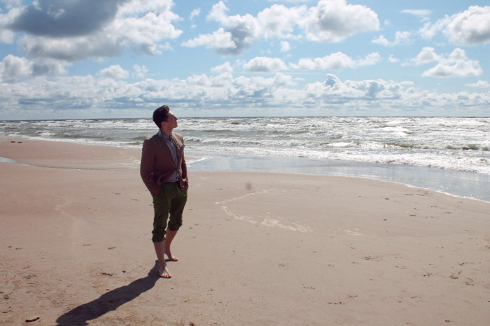
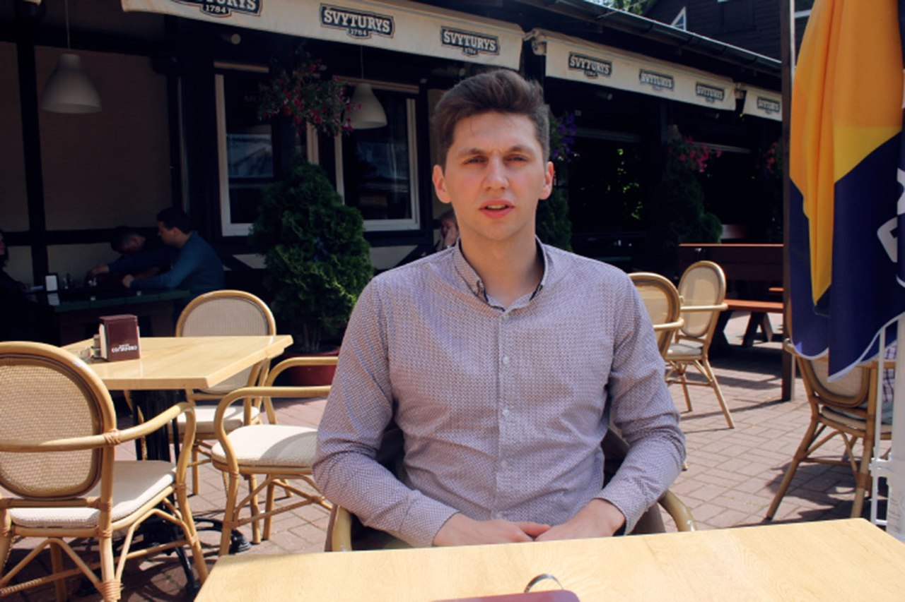

Добрый день. Я считаю, что перед встречей с психологом необходимо узнать о том, где он обучался и где он работал.
Потапов Борис родился в 1987 году. В 2014 году я закончил университет с дипломом "Психолог. Преподаватель психологии". В 2014 году поступил в аспирантуру и сейчас работаю над диссертацией. С 2014 по 2018 года я работал в Национальном Институте Образования в должности научного сотрудника в лаборатории психологии развития. С 2017 года работаю в Национальной Академии Наук.
 Основные направляения, которые меня интересуют это: психология личности, психология мотива и мотивации, психология эмоций, психология деятельности, визуальная психодиагностика, психология позновательных процессов, ворастная психология, психотерапия, психология консультирования, клиническая психология, психофизиология, психофизика, экспериментальная психология, психология коммуникации, психология масс, психология групп, методы нейромаркетинга в рекламе и творчестве.
 В своей работе я использую актуальную базу знаний академической психологии для того, что бы помочь в преодолении жизненных кризисов и сложных периодов, а так же помочь понять свою личность, избавиться от страхов, принять себя такой личностью какой Вы являетесь и полюбить себя. Я считаю, что каждый челвоек может жить достойно если он поймет то, чего он хочет и преодолеет страхи, осознает свои возможности и выстраит такой план жизни, который позволит быть счастливым человеком.
Плохие события случаются с каждым. Все мы просто люди, которые иногда нуждаются в помощи. Первый шаг к победе это признать, что мне нужна помощь.